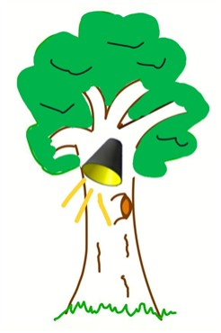
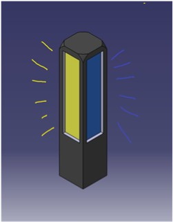
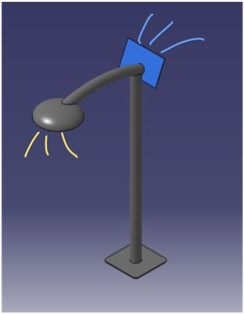

💡 조족등

[조족등 컨셉 이미지]
조족등을 제작하게 된 이유:
- 버스 정류장 근처 너무 어두워 위험한 큰 길
- 차조차 사람을 확인할 수 없을 만큼 어두운 도로 환경
전구 색상과 효과:
- 백색등: 밝고 선명함 - 맑은 날 주로 사용
- 황색등: 백색등보다 가시성이 더욱 뛰어남 - 비오는 날, 안개낀 날 주로 사용
- UV 램프: 파장이 짧은 청색광을 벌레가 좋아함 - 도로 밖으로 향해 벌레 유인용
🧠 핵심 센서
스마트 조족등은 주변 환경과 사용자의 움직임을 정확히 파악하기 위해 다음 세 가지 센서를 핵심적으로 활용합니다.
- 압력 센서 (발자국 인식): 사용자가 걷는 행위를 직접적으로 감지하여 조명의 점등 및 소등을 **정확하게 제어**합니다. (예: 발판, 신발 부착 등)
- 라이다 (LiDAR) (거리 및 형태 인식): 조명 주변의 장애물과의 거리를 측정하고, 사람의 유무 및 형태를 인식하여 오작동을 최소화하며 안전을 확보합니다.
- 우적센서 (빗물 감지): 조명 주변의 장애물과의 거리를 측정하고, 사람의 유무 및 형태를 인식하여 오작동을 최소화하며 안전을 확보합니다.
- 조도 센서 (환경 밝기 측정): 주변 환경의 밝기를 측정하여 주간에는 작동을 멈추고 야간에만 시스템이 활성화되도록 **에너지 효율을 관리**합니다.
🔨 프로토타입 개발 및 비교 분석
조족등의 기능을 현대적으로 구현하기 위해 총 4단계의 프로토타입을 개발하고 주요 기능과 특징을 비교 분석했습니다.


나무애
바닥매립등
조족등
스마트 가로등
| 프로토타입 | 장점 | 단점 |
|---|---|---|
| 나무애 | 설치 시 구조물 필요 X | UV램프랑 조명 함께 켤 수 없음 나무가 도로가에 있어야함 |
| 바닥매립등 | 설치 시 구조물 필요 X | UV램프랑 조명 함께 켤 수 없음 걸려 넘어질 수 있음 |
| 조족등 | 보행자 맞춤형 잘 보이기 때문에 구조물에 걸릴 위험 X | 설치 시 구조물 필요 벌레가 낮게 모임 |
| 스마트 가로등 | 높아서 벌레가 위로 모임 유지보수 용이성 | 설치 시 구조물 필요, 비용이 비쌈 |
🌍 기대 효과 및 활용 계층
조족등 프로젝트는 단순한 조명을 넘어 농촌 생활의 안전과 효율을 증진하는 것을 목표로 합니다.
- 안전 증진: 야간 순찰이나 이동이 잦은 농촌 지역 주민(특히 고령층)의 낙상 사고 및 범죄 예방에 기여합니다.
- 에너지 효율: 필요한 순간에만 정확히 작동하여 불필요한 전력 소모를 줄이고, 친환경적인 농촌 인프라 구축에 일조합니다.
- 활용 계층: 현대에는 농장 관리인, 순찰대, 그리고 야간 이동이 많은 모든 농촌 거주자를 주요 타겟으로 합니다.